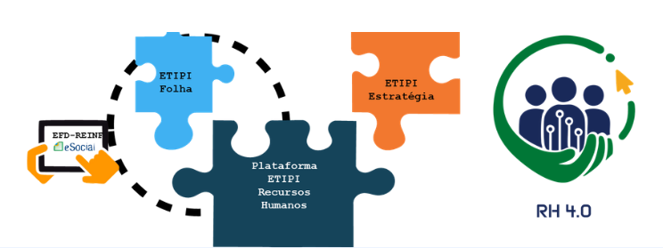
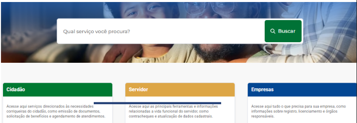
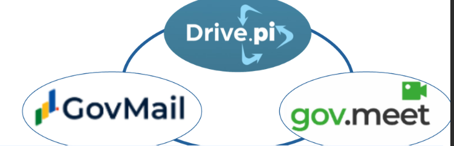
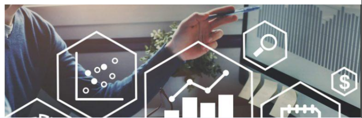
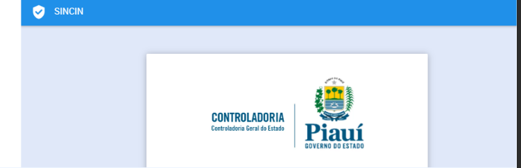
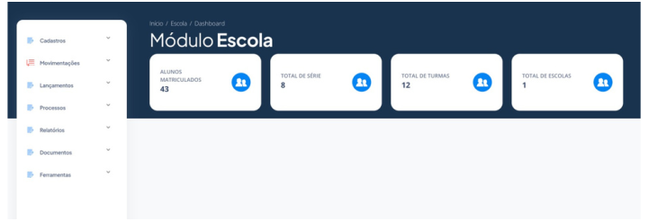

Destaques do Portfólio
Super Produtos & Soluções
Conheça as principais soluções que transformam a gestão pública em todo o Brasil.
⭐ Super Produto
Vertical de Saúde
Telessaúde Digital
Plataforma estadual de telemedicina com teleconsultas 24h, telediagnósticos e IA para priorização de casos. Cases: Amazonas e Pará.

⭐ Super Produto
Vertical de Administração
SIAPE — Gestão de Pessoas
Plataforma integrada de RH: cadastro funcional, folha, frequência e carreira com motor de regras parametrizável e conformidade LGPD.

⭐ Super Produto
Governo Digital
Gov.Pi
Portal digital com 300+ serviços públicos integrados ao Gov.br. Login único para cidadãos, servidores e empresas com soberania digital.

⭐ Super Produto
Segurança Pública e Trânsito
Cell Guard
Plataforma de segurança com IA para rastreamento e recuperação de celulares roubados, integrando forças policiais e operadoras.

⭐ Super Produto
Segurança Pública e Trânsito
B.O. Fácil
Moderniza o registro de Boletins de Ocorrência com arquitetura Data Lakehouse e integração nacional. B.O. pelo WhatsApp.

⭐ Super Produto
Vertical de Educação
Plataforma da Primeira Infância
Gestão integral de crianças 0–6 anos: saúde, educação, assistência social e parentalidade. Alinhada ao framework OMS/UNICEF.

⭐ Super Produto
Segurança Pública e Trânsito
Serviço de Identificação CIN
Emissão e gestão da Carteira de Identidade Nacional com biometria facial, OCR, prova de vida e assinatura eletrônica.

🔹 Produto Estratégico
Vertical de Administração
GOV.SPACE
Suite com GovMail, GovDrive e Gov.Meet. Substitui plataformas privadas com soberania digital e criptografia ponta a ponta.
🔹 Produto Estratégico
Vertical de Administração
Papiro — IA para Documentos
Plataforma documental com IA e OCR avançado: classifica documentos, extrai metadados e automatiza publicação no Diário Oficial.

🔹 Produto Estratégico
Vertical de Administração
EMIT — Inteligência Tributária
Ecossistema municipal 100% web com motor de cálculo, arrecadação, dívida ativa e atendimento digital ao contribuinte.

🔹 Produto Estratégico
Vertical de Administração
SINCIN — Gestão de Contratos
Sistema de controle interno em nuvem para fiscalização de contratos públicos, análise de empenhos e prestação de contas.
🔹 Produto Estratégico
Vertical de Educação
EducaCorp
Plataforma governamental de educação corporativa com AVA, trilhas, certificados e integração Gov.br para o setor público.

🔹 Produto Estratégico
Vertical de Educação
Ensinus
Plataforma de educação pública para gestores, professores, alunos e famílias. Notificações automáticas e dashboards em tempo real.
🟡 Serviço Transversal
Redes e Serviços de TI
SOC — Segurança Cibernética
Centro especializado em monitoramento 24x7 com SIEM, EDR e automação de resposta a incidentes. Conformidade LGPD garantida.

🟡 Serviço Transversal
Redes e Serviços de TI
Computação em Nuvem
Modelo híbrido on-premise com AWS, Google Cloud e Oracle Cloud. Escalabilidade sob demanda para picos de uso governamental.
🔹 Produto Estratégico
Vertical de Saúde
Prontuário Eletrônico
Plataforma que unifica dados de saúde integrada ao e-SUS e Conecte SUS. Agendamento, filas e conformidade LGPD.